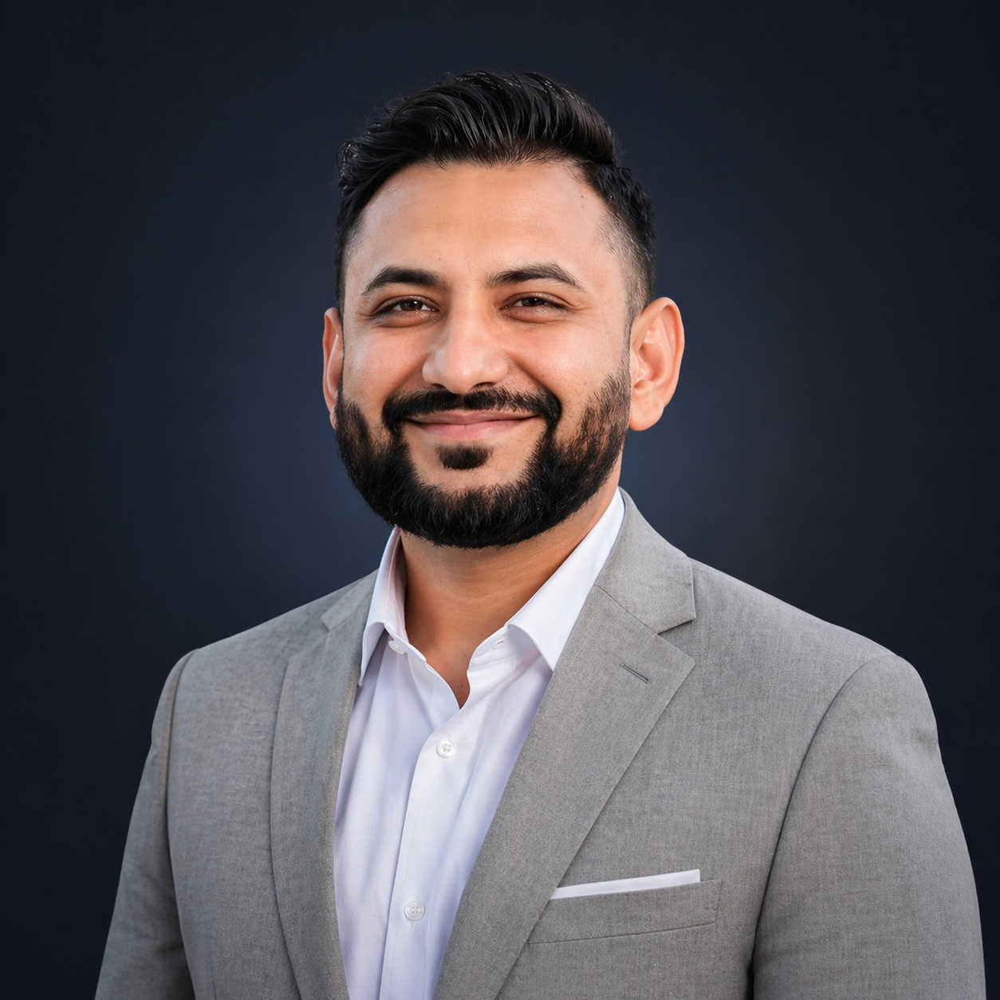

Acacia Network
Systems Administration & Infrastructure Support
Hybrid identity, Microsoft 365, enterprise infrastructure, and process automation. Hands-on work across account lifecycles, messaging, endpoint inventory, and shared storage.
SYSTEMS ADMINISTRATION · SERVICENOW
I’m Qalbe, a systems administrator connecting enterprise infrastructure, identity, and service management. I turn complex operational challenges into dependable, repeatable processes.

ServiceNow
Microsoft Entra
Microsoft 365
PowerShell
ManageEngine
01 / SELECTED WORK
A selection of integrations, automations, and infrastructure projects built around practical operational needs.
No projects match your search. Try another keyword or category.
02 / ABOUT ME
Good technology should make work simpler for the people who depend on it.
My work spans hybrid identity, messaging, endpoint management, and enterprise infrastructure. At Acacia Network, I support the systems and processes that keep teams connected and productive.
I also work with ServiceNow administration and integrations, bringing the same focus on clear ownership, consistent workflows, and useful data to service management.
Active Directory, Entra ID, SSO, and account lifecycle management.
ServiceNow, ITSM workflows, CMDB concepts, and integrations.
Microsoft 365, PowerShell, Graph API, and infrastructure operations.
03 / EXPERIENCE
Hybrid identity, Microsoft 365, enterprise infrastructure, and process automation. Hands-on work across account lifecycles, messaging, endpoint inventory, and shared storage.
Structured business workflows, customer intake, task ownership, and coordination across sales, management, DMV, and finance.
Enterprise support operations, ticket-driven service delivery, and standardized support processes.
University of East London
BSc Information Security Systems · 2011–2015
04 / LET’S CONNECT
Interested in systems administration, ServiceNow,
and ITSM opportunities.